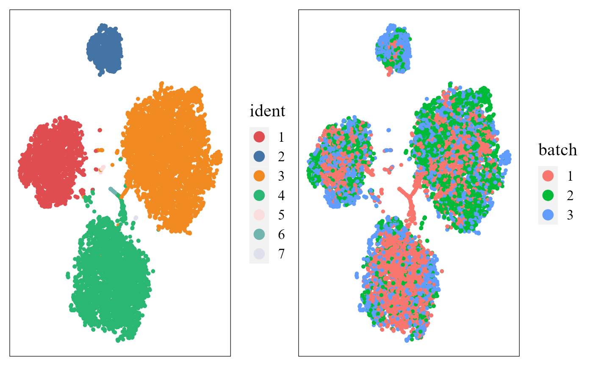
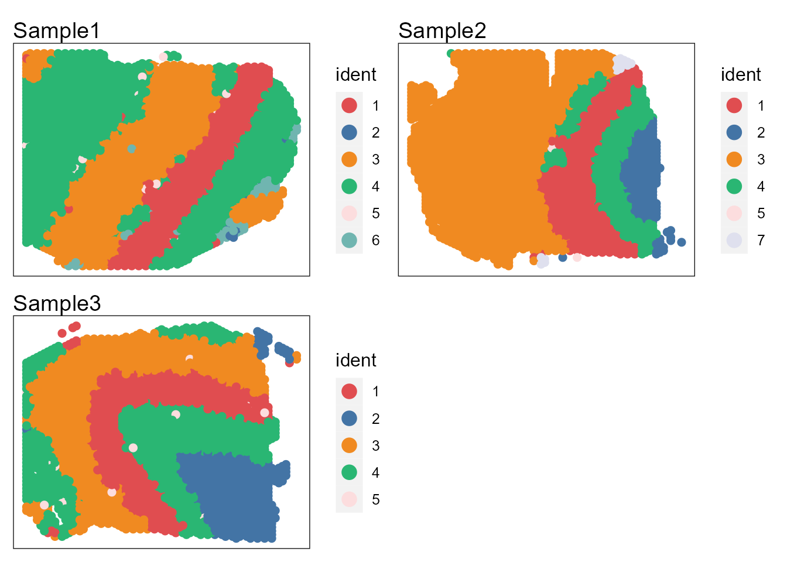
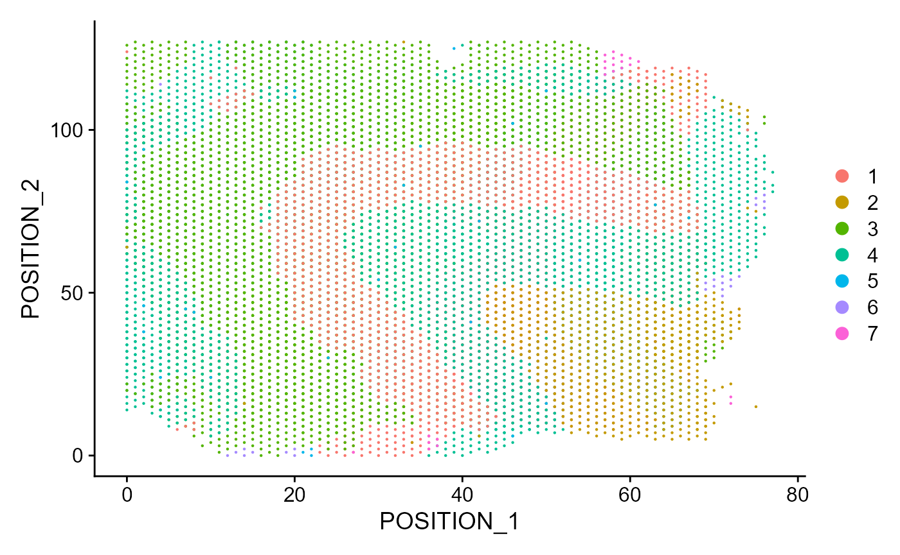
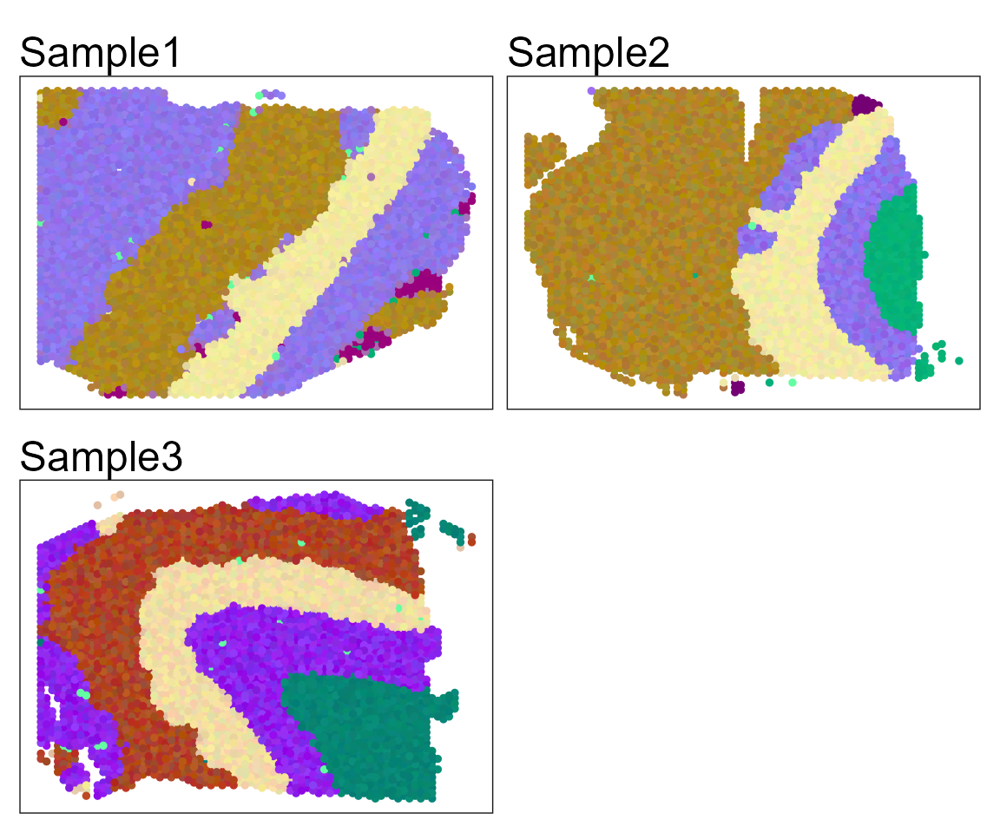
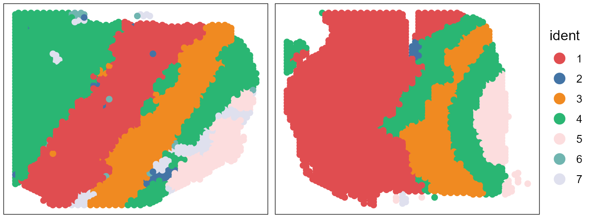
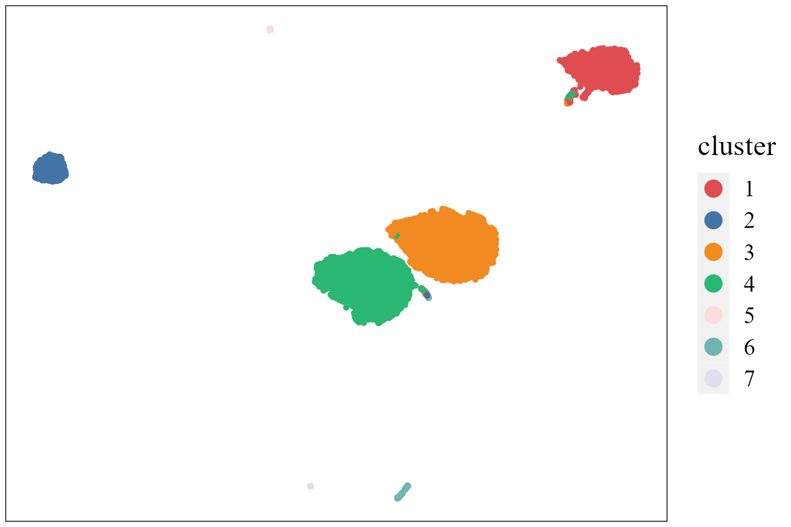
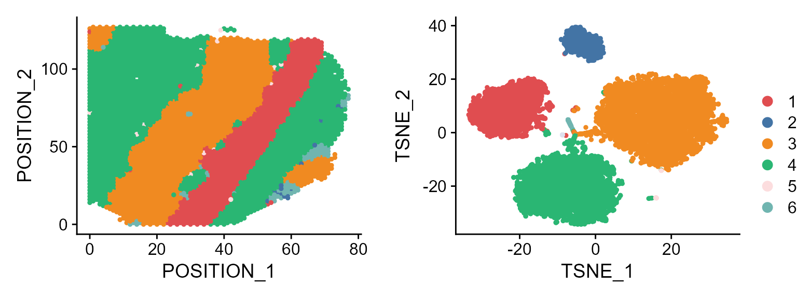

This vignette introduces the PRECAST workflow for the analysis of integrating multiple spatial transcriptomics dataset. The workflow consists of three steps
We demonstrate the use of PRECAST to three simulated Visium data that are here, which can be downloaded to the current working path by the following command:
githubURL <- "https://github.com/feiyoung/PRECAST/blob/main/vignettes_data/data_simu.rda?raw=true"
download.file(githubURL,"data_simu.rda",mode='wb')Then load to R
load("data_simu.rda")The package can be loaded with the command:
library(PRECAST)
#> Loading required package: parallel
#> Loading required package: gtools
#> PRECAST : An efficient data integration method is provided for multiple spatial transcriptomics data with non-cluster-relevant effects such as the complex batch effects. It unifies spatial factor analysis simultaneously with spatial clustering and embedding alignment, requiring only partially shared cell/domain clusters across datasets. More details can be referred to Wei Liu, et al. (2023) <doi:10.1038/s41467-023-35947-w>. Check out our Package website (https://feiyoung.github.io/PRECAST/index.html) for a more complete description of the methods and analyses
library(Seurat)
#> Warning: package 'Seurat' was built under R version 4.1.3
#> Attaching SeuratObject
#> Attaching spFirst, we view the the three simulated spatial transcriptomics data with Visium platform.
data_simu ## a list including three Seurat object with default assay: RNA
#> [[1]]
#> An object of class Seurat
#> 2000 features across 4226 samples within 1 assay
#> Active assay: RNA (2000 features, 0 variable features)
#>
#> [[2]]
#> An object of class Seurat
#> 2000 features across 3661 samples within 1 assay
#> Active assay: RNA (2000 features, 0 variable features)
#>
#> [[3]]
#> An object of class Seurat
#> 2000 features across 3639 samples within 1 assay
#> Active assay: RNA (2000 features, 0 variable features)Check the content in data_simu.
head(data_simu[[1]])
row.names(data_simu[[1]])[1:10]We show how to create a PRECASTObject object step by step. First, we create a Seurat list object using the count matrix and meta data of each data batch. Although data_simu is a prepared Seurat list object, we re-create a same objcet seuList to show the details.
## Get the gene-by-spot read count matrices
countList <- lapply(data_simu, function(x) x[["RNA"]]@counts)
## Get the meta data of each spot for each data batch
metadataList <- lapply(data_simu, function(x) x@meta.data)
## ensure the row.names of metadata in metaList are the same as that of colnames count matrix in countList
M <- length(countList)
for(r in 1:M){
row.names(metadataList[[r]]) <- colnames(countList[[r]])
}
## Create the Seurat list object
seuList <- list()
for(r in 1:M){
seuList[[r]] <- CreateSeuratObject(counts = countList[[r]], meta.data=metadataList[[r]], project = "PRECASTsimu")
}Next, we use CreatePRECASTObject() to create a PRECASTObject based on the Seurat list object seuList. This function will do three things:
premin.features and premin.spots, respectively; the spots are retained in raw data (seuList) with at least premin.features number of nonzero-count features (genes), and the genes are retained in raw data (seuList) with at least premin.spots number of spots. To ease presentation, we denote the filtered Seurat list object as data_filter1.gene.number=2000) for each data batch using FindSVGs() function in DR.SC package for spatially variable genes or FindVariableFeatures() function in Seurat package for highly variable genes. Next, we prioritized genes based on the number of times they were selected as variable genes in all samples and chose the top 2,000 genes. Then denote the Seurat list object as data_filter2, where only 2,000 genes are retained.postmin.features and postmin.spots, respectively; the spots are retained with at least post.features nonzero counts across genes; the features (genes) are retained with at least postmin.spots number of nonzero-count spots. Usually, no genes are filltered because these genes are variable genes.If the argument customGenelist is not NULL, then this function only does (3) based on customGenelist gene list.
In this simulated dataset, we don’t require to select genes, thus, we set customGenelist=row.names(seuList[[1]]), representing the user-defined gene list. User can retain the raw seurat list object by setting rawData.preserve = TRUE.
## Create PRECASTObject
set.seed(2022)
PRECASTObj <- CreatePRECASTObject(seuList, customGenelist=row.names(seuList[[1]]))
#> Filter spots and features from Raw count data...
#>
#>
#> Filter spots and features from SVGs(HVGs) count data...
## User can retain the raw seuList by the following commond.
## PRECASTObj <- CreatePRECASTObject(seuList, customGenelist=row.names(seuList[[1]]), rawData.preserve = TRUE)Add adjacency matrix list and parameter setting of PRECAST. More model setting parameters can be found in model_set().
## check the number of genes/features after filtering step
PRECASTObj@seulist
#> [[1]]
#> An object of class Seurat
#> 2000 features across 4226 samples within 1 assay
#> Active assay: RNA (2000 features, 0 variable features)
#>
#> [[2]]
#> An object of class Seurat
#> 2000 features across 3661 samples within 1 assay
#> Active assay: RNA (2000 features, 0 variable features)
#>
#> [[3]]
#> An object of class Seurat
#> 2000 features across 3639 samples within 1 assay
#> Active assay: RNA (2000 features, 0 variable features)
## seuList is null since the default value `rawData.preserve` is FALSE.
PRECASTObj@seuList
#> NULL
## Add adjacency matrix list for a PRECASTObj object to prepare for PRECAST model fitting.
PRECASTObj <- AddAdjList(PRECASTObj, platform = "Visium")
#> Neighbors were identified for 4226 out of 4226 spots.
#> Neighbors were identified for 3658 out of 3661 spots.
#> Neighbors were identified for 3638 out of 3639 spots.
## Add a model setting in advance for a PRECASTObj object. verbose =TRUE helps outputing the information in the algorithm.
PRECASTObj <- AddParSetting(PRECASTObj, Sigma_equal=FALSE, maxIter=30, verbose=TRUE)For function PRECAST, users can specify the number of clusters \(K\) or set K to be an integer vector by using modified BIC(MBIC) to determine \(K\). For convenience, we give a single K here.
### Given K
set.seed(2022)
PRECASTObj <- PRECAST(PRECASTObj, K=7)
#> Intergrative data info.: 3 samples, 2000 genes X 11526 spots------
#> PRECAST model setting: error_heter=TRUE, Sigma_equal=FALSE, Sigma_diag=TRUE, mix_prop_heter=TRUE
#> Start computing intial values...
#> fitting ...
#>
|
| | 0%
|
|=================================== | 50%
|
|======================================================================| 100%
#> ----Fitting PRECAST model----------------
#> variable initialize finish!
#> predict Y and V!
#> Finish ICM step!
#> iter = 2, loglik= 9805208.000000, dloglik=1.004566
#> predict Y and V!
#> diff Energy = 0.675988
#> diff Energy = 0.330638
#> Finish ICM step!
#> iter = 3, loglik= 10273628.000000, dloglik=0.047773
#> predict Y and V!
#> diff Energy = 3.474599
#> diff Energy = 11.648269
#> diff Energy = 17.306027
#> Finish ICM step!
#> iter = 4, loglik= 10320463.000000, dloglik=0.004559
#> predict Y and V!
#> diff Energy = 0.497781
#> diff Energy = 6.251982
#> diff Energy = 3.117946
#> Finish ICM step!
#> iter = 5, loglik= 10341195.000000, dloglik=0.002009
#> predict Y and V!
#> diff Energy = 0.263416
#> diff Energy = 9.210964
#> diff Energy = 9.121092
#> Finish ICM step!
#> iter = 6, loglik= 10352922.000000, dloglik=0.001134
#> predict Y and V!
#> diff Energy = 12.775394
#> diff Energy = 7.202671
#> diff Energy = 17.935323
#> Finish ICM step!
#> iter = 7, loglik= 10360052.000000, dloglik=0.000689
#> predict Y and V!
#> diff Energy = 0.042137
#> diff Energy = 6.231523
#> diff Energy = 11.772275
#> Finish ICM step!
#> iter = 8, loglik= 10365052.000000, dloglik=0.000483
#> predict Y and V!
#> diff Energy = 2.686314
#> diff Energy = 10.102500
#> diff Energy = 15.403120
#> Finish ICM step!
#> iter = 9, loglik= 10368596.000000, dloglik=0.000342
#> predict Y and V!
#> diff Energy = 1.239846
#> diff Energy = 10.025986
#> diff Energy = 4.546954
#> Finish ICM step!
#> iter = 10, loglik= 10371421.000000, dloglik=0.000272
#> predict Y and V!
#> diff Energy = 1.370821
#> diff Energy = 12.099247
#> diff Energy = 3.779945
#> Finish ICM step!
#> iter = 11, loglik= 10373788.000000, dloglik=0.000228
#> predict Y and V!
#> diff Energy = 1.442410
#> diff Energy = 9.277393
#> diff Energy = 0.974774
#> Finish ICM step!
#> iter = 12, loglik= 10375835.000000, dloglik=0.000197
#> predict Y and V!
#> diff Energy = 11.485756
#> diff Energy = 2.585834
#> Finish ICM step!
#> iter = 13, loglik= 10377760.000000, dloglik=0.000186
#> predict Y and V!
#> diff Energy = 4.785165
#> diff Energy = 8.456071
#> diff Energy = 3.921871
#> Finish ICM step!
#> iter = 14, loglik= 10379619.000000, dloglik=0.000179
#> predict Y and V!
#> diff Energy = 7.485598
#> diff Energy = 6.911280
#> diff Energy = 0.301566
#> Finish ICM step!
#> iter = 15, loglik= 10381568.000000, dloglik=0.000188
#> predict Y and V!
#> diff Energy = 4.447514
#> diff Energy = 5.899638
#> diff Energy = 1.766319
#> Finish ICM step!
#> iter = 16, loglik= 10383653.000000, dloglik=0.000201
#> predict Y and V!
#> diff Energy = 5.398727
#> diff Energy = 6.223027
#> diff Energy = 4.837140
#> Finish ICM step!
#> iter = 17, loglik= 10385536.000000, dloglik=0.000181
#> predict Y and V!
#> diff Energy = 1.986085
#> diff Energy = 4.330112
#> diff Energy = 2.915439
#> Finish ICM step!
#> iter = 18, loglik= 10387120.000000, dloglik=0.000153
#> predict Y and V!
#> diff Energy = 9.073453
#> diff Energy = 4.043537
#> diff Energy = 2.900989
#> Finish ICM step!
#> iter = 19, loglik= 10388378.000000, dloglik=0.000121
#> predict Y and V!
#> diff Energy = 6.729170
#> diff Energy = 5.424516
#> diff Energy = 5.225277
#> Finish ICM step!
#> iter = 20, loglik= 10389475.000000, dloglik=0.000106
#> predict Y and V!
#> diff Energy = 1.439715
#> diff Energy = 5.754209
#> diff Energy = 3.858820
#> Finish ICM step!
#> iter = 21, loglik= 10390476.000000, dloglik=0.000096
#> predict Y and V!
#> diff Energy = 1.294347
#> diff Energy = 4.839153
#> diff Energy = 3.396349
#> Finish ICM step!
#> iter = 22, loglik= 10391398.000000, dloglik=0.000089
#> predict Y and V!
#> diff Energy = 2.815156
#> diff Energy = 4.571275
#> diff Energy = 2.620126
#> Finish ICM step!
#> iter = 23, loglik= 10392341.000000, dloglik=0.000091
#> predict Y and V!
#> diff Energy = 1.776992
#> diff Energy = 4.686899
#> diff Energy = 6.155478
#> Finish ICM step!
#> iter = 24, loglik= 10393250.000000, dloglik=0.000087
#> predict Y and V!
#> diff Energy = 3.485664
#> diff Energy = 5.732265
#> diff Energy = 4.433338
#> Finish ICM step!
#> iter = 25, loglik= 10394194.000000, dloglik=0.000091
#> predict Y and V!
#> diff Energy = 2.225676
#> diff Energy = 7.704209
#> diff Energy = 4.325419
#> Finish ICM step!
#> iter = 26, loglik= 10395154.000000, dloglik=0.000092
#> predict Y and V!
#> diff Energy = 1.163708
#> diff Energy = 4.282929
#> diff Energy = 3.218946
#> Finish ICM step!
#> iter = 27, loglik= 10396157.000000, dloglik=0.000096
#> predict Y and V!
#> diff Energy = 5.245299
#> diff Energy = 3.942532
#> Finish ICM step!
#> iter = 28, loglik= 10397189.000000, dloglik=0.000099
#> predict Y and V!
#> diff Energy = 3.208529
#> diff Energy = 1.376185
#> diff Energy = 0.563031
#> Finish ICM step!
#> iter = 29, loglik= 10398239.000000, dloglik=0.000101
#> predict Y and V!
#> diff Energy = 0.410855
#> diff Energy = 9.123223
#> diff Energy = 0.186820
#> Finish ICM step!
#> iter = 30, loglik= 10399392.000000, dloglik=0.000111Select a best model and use ARI to check the performance of clustering
## backup the fitting results in resList
resList <- PRECASTObj@resList
# PRECASTObj@resList <- resList
PRECASTObj <- selectModel(PRECASTObj)
true_cluster <- lapply(data_simu, function(x) x$true_cluster)
str(true_cluster)
#> List of 3
#> $ : Named num [1:4226] 1 3 1 7 6 6 7 5 3 3 ...
#> ..- attr(*, "names")= chr [1:4226] "S1_spot1" "S1_spot2" "S1_spot3" "S1_spot4" ...
#> $ : Named num [1:3661] 4 6 3 4 6 3 3 4 6 7 ...
#> ..- attr(*, "names")= chr [1:3661] "S1_spot1" "S1_spot2" "S1_spot3" "S1_spot4" ...
#> $ : Named num [1:3639] 3 1 7 3 5 6 7 3 2 6 ...
#> ..- attr(*, "names")= chr [1:3639] "S1_spot1" "S1_spot2" "S1_spot3" "S1_spot4" ...
mclust::adjustedRandIndex(unlist(PRECASTObj@resList$cluster), unlist(true_cluster))
#> [1] 0.6551426Integrate the two samples by the function IntegrateSpaData.
seuInt <- IntegrateSpaData(PRECASTObj, species='unknown')
#> Using only PRECAST results to obtain the batch corrected gene expressions since species is unknown or the genelist in PRECASTObj has less than 5 overlapp with the housekeeping genes of given species.
#> Users can specify the custom_housekeep by themselves to use the housekeeping genes based methods.
seuInt
#> An object of class Seurat
#> 2000 features across 11526 samples within 1 assay
#> Active assay: PRE_CAST (2000 features, 0 variable features)
#> 2 dimensional reductions calculated: PRECAST, position
## The low-dimensional embeddings obtained by PRECAST are saved in PRECAST reduction slot.First, user can choose a beautiful color schema using chooseColors().
cols_cluster <- chooseColors(palettes_name = 'Nature 10', n_colors = 7, plot_colors = TRUE)
Show the spatial scatter plot for clusters
p12 <- SpaPlot(seuInt, batch=NULL, cols=cols_cluster, point_size=2, combine=TRUE)
p12
# users can plot each sample by setting combine=FALSEUsers can re-plot the above figures for specific need by returning a ggplot list object. For example, we only plot the spatial heatmap of first two data batches.
pList <- SpaPlot(seuInt, batch=NULL, cols=cols_cluster, point_size=2, combine=FALSE, title_name=NULL)
drawFigs(pList[1:2], layout.dim = c(1,2), common.legend = TRUE, legend.position = 'right', align='hv')
Show the spatial UMAP/tNSE RGB plot
seuInt <- AddUMAP(seuInt)
SpaPlot(seuInt, batch=NULL,item='RGB_UMAP',point_size=1, combine=TRUE, text_size=15)
## Plot tSNE RGB plot
#seuInt <- AddTSNE(seuInt)
#SpaPlot(seuInt, batch=NULL,item='RGB_TSNE',point_size=2, combine=T, text_size=15)Show the tSNE plot based on the extracted features from PRECAST to check the performance of integration.
seuInt <- AddTSNE(seuInt, n_comp = 2)
p1 <- dimPlot(seuInt, item='cluster', font_family='serif', cols=cols_cluster) # Times New Roman
p2 <- dimPlot(seuInt, item='batch', point_size = 1, font_family='serif')
drawFigs(list(p1, p2), common.legend=FALSE, align='hv') 
# It is noted that only sample batch 1 has cluster 4, and only sample batch 2 has cluster 7. Show the UMAP plot based on the extracted features from PRECAST.
dimPlot(seuInt, reduction = 'UMAP3', item='cluster', cols=cols_cluster, font_family='serif')
Users can also use the visualization functions in Seurat package:
library(Seurat)
p1 <- DimPlot(seuInt[,1: 4226], reduction = 'position', cols=cols_cluster, pt.size =1) # plot the first data batch: first 4226 spots.
p2 <- DimPlot(seuInt, reduction = 'tSNE',cols=cols_cluster, pt.size=1)
drawFigs(list(p1, p2), layout.dim = c(1,2), common.legend = TRUE)
Combined differential expression analysis
dat_deg <- FindAllMarkers(seuInt)
#> Calculating cluster 1
#> Calculating cluster 2
#> Calculating cluster 3
#> Calculating cluster 4
#> Calculating cluster 5
#> Calculating cluster 6
#> Calculating cluster 7
library(dplyr)
#> Warning: package 'dplyr' was built under R version 4.1.3
#>
#> Attaching package: 'dplyr'
#> The following objects are masked from 'package:stats':
#>
#> filter, lag
#> The following objects are masked from 'package:base':
#>
#> intersect, setdiff, setequal, union
n <- 2
dat_deg %>%
group_by(cluster) %>%
top_n(n = n, wt = avg_log2FC) -> top10
head(top10)
#> # A tibble: 6 x 7
#> # Groups: cluster [3]
#> p_val avg_log2FC pct.1 pct.2 p_val_adj cluster gene
#> <dbl> <dbl> <dbl> <dbl> <dbl> <fct> <chr>
#> 1 2.16e- 9 1.13 0.399 0.313 4.32e- 6 1 gene142
#> 2 1.58e- 4 0.825 0.279 0.273 3.16e- 1 1 gene70
#> 3 1.85e-13 1.77 0.521 0.275 3.70e-10 2 gene211
#> 4 1.24e- 8 1.78 0.502 0.306 2.48e- 5 2 gene1226
#> 5 1.03e-22 1.05 0.158 0.209 2.07e-19 3 gene670
#> 6 1.69e- 9 0.586 0.39 0.305 3.39e- 6 3 gene1994
sessionInfo()
#> R version 4.1.2 (2021-11-01)
#> Platform: x86_64-w64-mingw32/x64 (64-bit)
#> Running under: Windows 10 x64 (build 22621)
#>
#> Matrix products: default
#>
#> locale:
#> [1] LC_COLLATE=Chinese (Simplified)_China.936
#> [2] LC_CTYPE=Chinese (Simplified)_China.936
#> [3] LC_MONETARY=Chinese (Simplified)_China.936
#> [4] LC_NUMERIC=C
#> [5] LC_TIME=Chinese (Simplified)_China.936
#>
#> attached base packages:
#> [1] parallel stats graphics grDevices utils datasets methods
#> [8] base
#>
#> other attached packages:
#> [1] dplyr_1.0.9 sp_1.5-0 SeuratObject_4.1.0 Seurat_4.1.1
#> [5] PRECAST_1.5 gtools_3.9.2.2
#>
#> loaded via a namespace (and not attached):
#> [1] utf8_1.2.2 reticulate_1.25
#> [3] tidyselect_1.1.2 htmlwidgets_1.5.4
#> [5] grid_4.1.2 BiocParallel_1.28.3
#> [7] Rtsne_0.16 munsell_0.5.0
#> [9] ScaledMatrix_1.2.0 codetools_0.2-18
#> [11] ragg_1.2.2 ica_1.0-2
#> [13] future_1.26.1 miniUI_0.1.1.1
#> [15] spatstat.random_2.2-0 colorspace_2.0-3
#> [17] progressr_0.10.1 Biobase_2.54.0
#> [19] highr_0.9 knitr_1.37
#> [21] rstudioapi_0.13 stats4_4.1.2
#> [23] SingleCellExperiment_1.16.0 ROCR_1.0-11
#> [25] ggsignif_0.6.3 tensor_1.5
#> [27] listenv_0.8.0 labeling_0.4.2
#> [29] MatrixGenerics_1.6.0 GenomeInfoDbData_1.2.7
#> [31] polyclip_1.10-0 farver_2.1.0
#> [33] rprojroot_2.0.3 parallelly_1.32.0
#> [35] vctrs_0.4.1 generics_0.1.2
#> [37] xfun_0.29 ggthemes_4.2.4
#> [39] R6_2.5.1 GenomeInfoDb_1.30.1
#> [41] ggbeeswarm_0.6.0 rsvd_1.0.5
#> [43] bitops_1.0-7 spatstat.utils_3.0-1
#> [45] cachem_1.0.6 DelayedArray_0.20.0
#> [47] assertthat_0.2.1 promises_1.2.0.1
#> [49] scales_1.2.0 rgeos_0.5-9
#> [51] beeswarm_0.4.0 gtable_0.3.0
#> [53] beachmat_2.10.0 globals_0.15.0
#> [55] goftest_1.2-3 rlang_1.0.2
#> [57] systemfonts_1.0.4 splines_4.1.2
#> [59] rstatix_0.7.0 lazyeval_0.2.2
#> [61] broom_0.7.12 spatstat.geom_2.4-0
#> [63] yaml_2.3.6 reshape2_1.4.4
#> [65] abind_1.4-5 backports_1.4.1
#> [67] httpuv_1.6.5 tools_4.1.2
#> [69] ggplot2_3.3.6 ellipsis_0.3.2
#> [71] spatstat.core_2.4-4 jquerylib_0.1.4
#> [73] RColorBrewer_1.1-3 BiocGenerics_0.40.0
#> [75] ggridges_0.5.3 Rcpp_1.0.10
#> [77] plyr_1.8.7 sparseMatrixStats_1.6.0
#> [79] zlibbioc_1.40.0 purrr_0.3.4
#> [81] RCurl_1.98-1.6 ggpubr_0.4.0
#> [83] rpart_4.1.16 deldir_1.0-6
#> [85] pbapply_1.5-0 viridis_0.6.2
#> [87] cowplot_1.1.1 S4Vectors_0.32.3
#> [89] zoo_1.8-10 SummarizedExperiment_1.24.0
#> [91] ggrepel_0.9.1 cluster_2.1.2
#> [93] fs_1.5.2 magrittr_2.0.3
#> [95] GiRaF_1.0.1 data.table_1.14.2
#> [97] scattermore_0.8 lmtest_0.9-40
#> [99] RANN_2.6.1 fitdistrplus_1.1-8
#> [101] matrixStats_0.62.0 patchwork_1.1.1
#> [103] mime_0.12 evaluate_0.15
#> [105] xtable_1.8-4 mclust_5.4.10
#> [107] IRanges_2.28.0 gridExtra_2.3
#> [109] compiler_4.1.2 scater_1.25.1
#> [111] tibble_3.1.7 KernSmooth_2.23-20
#> [113] crayon_1.5.1 htmltools_0.5.2
#> [115] mgcv_1.8-39 later_1.3.0
#> [117] tidyr_1.2.0 DBI_1.1.2
#> [119] MASS_7.3-55 car_3.0-12
#> [121] Matrix_1.4-0 cli_3.2.0
#> [123] igraph_1.3.5 DR.SC_3.1
#> [125] GenomicRanges_1.46.1 pkgconfig_2.0.3
#> [127] pkgdown_2.0.6 plotly_4.10.0
#> [129] scuttle_1.4.0 spatstat.sparse_2.1-1
#> [131] vipor_0.4.5 bslib_0.3.1
#> [133] XVector_0.34.0 CompQuadForm_1.4.3
#> [135] stringr_1.4.0 digest_0.6.29
#> [137] sctransform_0.3.3 RcppAnnoy_0.0.19
#> [139] spatstat.data_3.0-0 rmarkdown_2.11
#> [141] leiden_0.4.2 uwot_0.1.11
#> [143] DelayedMatrixStats_1.16.0 shiny_1.7.1
#> [145] lifecycle_1.0.1 nlme_3.1-155
#> [147] jsonlite_1.8.0 carData_3.0-5
#> [149] BiocNeighbors_1.12.0 limma_3.50.1
#> [151] desc_1.4.0 viridisLite_0.4.0
#> [153] fansi_1.0.3 pillar_1.7.0
#> [155] lattice_0.20-45 fastmap_1.1.0
#> [157] httr_1.4.3 survival_3.2-13
#> [159] glue_1.6.2 png_0.1-7
#> [161] stringi_1.7.6 sass_0.4.1
#> [163] textshaping_0.3.6 BiocSingular_1.10.0
#> [165] memoise_2.0.1 irlba_2.3.5
#> [167] future.apply_1.9.0